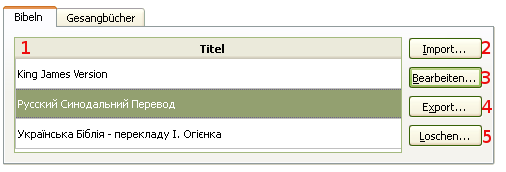
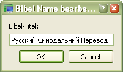

4.1 Bibel-Verwaltung
Für Bibel-Verwaltung:
Es wird ein Dialog-Fenster mit den Verwaltung-Optionen geöffnet. Abkürz.: Crtl+M
softProjector ermöglicht das Hinzufügen von unbegrenzten Bibel-Versionen.
Im Dialog-Fenster kann man die Bibeln importieren, bearbeiten, exportieren oder löschen.

Diese Option ermöglicht eine Bibeldatei im softProjector-Format (*.sps) zu importieren. sowie von der website Unbound Bible (ausführlicher - website-Adresse unten)
Beim Drücken dieses Knopfes, offnet sich ein Dialog-Fenster, in dem eine Änderung der Bibel-Version vorgenommen werden kann.

Exportieren einer Bibel-Version aus der Datenbank.
Löschen einer Bibel-Version, die nicht mehr gebraucht wird. Wenn in der Datenbank nur eine Bibel-Version vorhanden ist, so ist das Löschen deren nicht möglich.
Import Unbound Bibles
1. Zur website: http://unbound.biola.edu/.
2. Klicken Sie Downloads.
3. Wählen Sie ein Bibel-Version zum download

4. Klicken Sie auf "Download" -Knopf und speichern Sie unter *.zip-Datei.
5. Suchen Sie die heruntergeladene zip-Datei und öffnen Sie sie.
6. Drücken Sie im Dialog-Fenster der Datenbank auf "Import" -Knopf.
7. Wählen Sie die Datei mit der Endung "_utf8.txt". Alle anderen Dateien öffnet der softProjector
nicht.